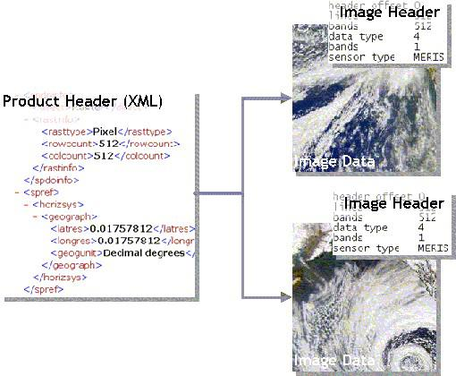

| The BEAM-DIMAP Data Format |
|
VISAT and the scientific data processors use a simple data input/output format, which makes it easy to import ENVISAT data in other imaging applications. The format is called DIMAP and has been developed by SPOT-Image, France. The BEAM software uses a special DIMAP profile called BEAM-DIMAP.
The BEAM-DIMAP is the standard I/O product format for VISAT and the BEAM Scientific Tools. The format was chosen, because it has a very simple and easy-to-understand structure.
A data product stored in this format is composed of
.dim in XML format containing the product meta-data.datatie_point_grids which contains ENVI®-compatible
images for each tie-point grid
vector_datawhich contains the geometries in a proprietary format.The following diagram shows the structure:

The geo-coding of data products in satellite co-ordinates is stored in so called tie-point grid datasets. Tie-point datasets are stored in the data directory and have exactly the same format as the geophysical bands of a product.
Because of its simplicity, the product components can be accessed with nearly every image processing system or programming language. The product's metadata can directly be viewed in a text editor or an XML viewer. The following contains a closer look at the components of the product format.
Important Note: In the BEAM software, pixel values always refer to the upper
left corner of the pixel. Map co-ordinates also typically refer to the upper left corner of the pixel.
Pixel co-ordinates are always zero based, the pixel at X=0,Y=0 refers to the upper left
pixel of an image and the upper left corner of that pixel.
XML stands for eXtensible Markup Language and is a mark-up language much like the better known HTML.
The most significant difference is that HTML is about displaying information, XML is about describing information. XML can be stored in plain text files and provides a data structuring scheme composed of elements and attributes. An element is enclosed by tags, but the tags are not predefined in XML. In order to use XML as a data storage, an application or standard must define its own tags. In this case, XML is very similar to HDF because the interpretation of the content is left to the application or, respectively, to the user.
The product header for a BEAM-DIMAP data product will contain two types of information
The reason why the image data is not directly stored in XML is simple: The product header is plain text, and an image stored in text format requires about 4 to 10 times more space than the simplest binary format and therefore requires considerable processing overhead when reading to and writing from such files.
One geophysical band in the data product is represented by a single image. The image data - the data product's geophysical samples - are stored in flat binary files in big endian order. What makes this format compatible with the simple ENVI image format is that an extra image header for each image is also stored: the ENVI header.
The header files also have plain text format and comprise key-values pairs describing storage layout of the raw data in terms of raster width, height and the sample data type. In addition to ENVI, multiple other imaging applications are capable of importing image files having flat binary format. Here is an example of a header file:
ENVI
samples = 1100
lines = 561
bands = 1
header offset = 0
file type = ENVI Standard
data type = 4
interleave = bsq
byte order = 1
An ENVI header file starts with the text string ENVI to be recognized by ENVI as
a native file header. Keywords within the file are used to indicate critical file information. The
following keywords are used by the BEAM-DIMAP format:
description | a character string describing the image or processing performed. |
samples | number of samples (pixels) per image line for each band. |
lines | number of lines per image for each band. |
bands | number of bands per image file. For BEAM-DIMAP the value is always
1 (one). |
header offset | refers to the number of bytes of imbedded header information present
in the file. These bytes are skipped when the ENVI file is read. For BEAM-DIMAP the value is always
0. |
file type | refers to specific ENVI defined file types such as certain data formats and
processing results. For BEAM-DIMAP the value is always the string "ENVI Standard". |
data type | parameter identifying the type of data representation, where 1=8 bit byte; 2=16-bit signed integer; 3=32-bit signed long integer; 4=32-bit floating point; 5=64- bit double precision floating point; 6=2x32-bit complex, real-imaginary pair of double precision; 9=2x64-bit double precision complex, real-imaginary pair of double precision; 12=16-bit unsigned integer; 13=32-bit unsigned long integer; 14=64-bit unsigned integer; and 15=64-bit unsigned long integer. |
interleave | refers to whether the data are band sequential (BSQ), band interleaved by
pixel (BIP),
or band interleaved by line (BIL). For BEAM-DIMAP the value is always "bsq". |
byte order | describes the order of the bytes in integer, long integer, 64-bit integer,
unsigned 64-bit integer, floating point, double precision, and complex data types;
Byte order=0 is Least Significant Byte First (LSF) data (DEC and MS-DOS systems)
and byte order=1 is Most Significant Byte First (MSF) data (all others - SUN, SGI,
IBM, HP, DG). For BEAM-DIMAP the value is always 1 (Most Significant Byte First = Big Endian
Order). |
x-start and y-start | parameters define the image coordinates for the upper left hand pixel in the image. The values in the header file are specified in "file coordinates," which is a zero-based number. |
map info | lists geographic coordinates information in the order of projection name (UTM), reference pixel x location in file coordinates, pixel y, pixel easting, pixel northing, x pixel size, y pixel size, Projection Zone, "North" or "South" for UTM only. |
projection info | parameters that describe user-defined projection information. This keyword is added to the ENVI header file if a user-defined projection is used instead of a standard projection. |
band names | allows entry of specific names for each band of an image. |
wavelength | lists the center wavelength values of each band in an image. |